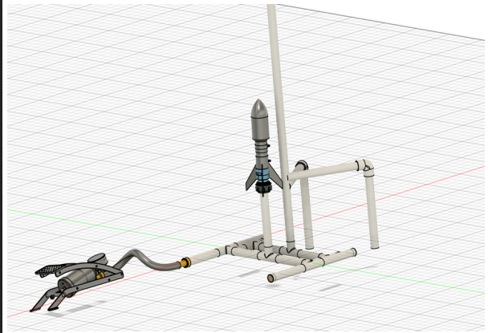
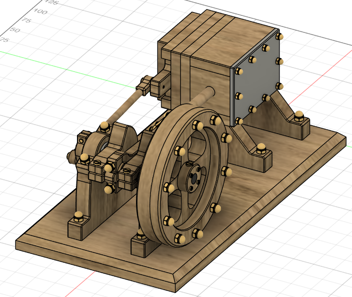
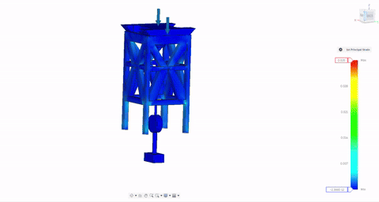
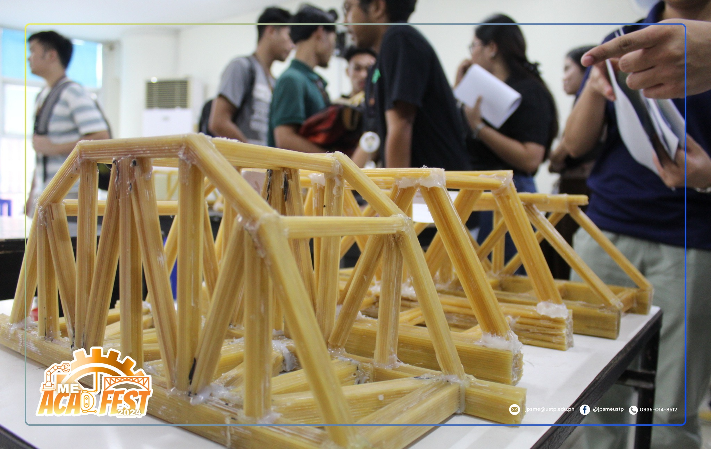

Side Projects
During my childhood till teenage years, I made many stuff; however, I did not document them. That experience is why I make a point to do so now.

I was appointed by Engr. Rayvencer Reyes as consultant to the entire Mechanical Engineering batch for the radio-controlled ornithopter project. If you want to know the step by step process, under the hood, what its like to build it. I have documented it here USTP Ornithopter

Led the whole batch of mechanical and electrical engineering(for the subject course) in the design and implementation of a water rocket launcher pad which is a hands-on engineering challenge that combined physics, creativity, and design, where participants built and launched water rockets while learning fundamental aerospace principles.

Wooden Air Engine is a complex machines can be built using simple, sustainable materials. This project highlights design efficiency, craftsmanship, and fundamental thermodynamic concepts—without metal or fuel of an engine.

we build one of the strongest, best-looking tower using only spaghetti and glue that supports a top load and meets weight and size limits.

A classic STEM engineering challenge where teams design and construct load-bearing bridges using spaghetti and adhesive, optimizing strength under strict material constraints.